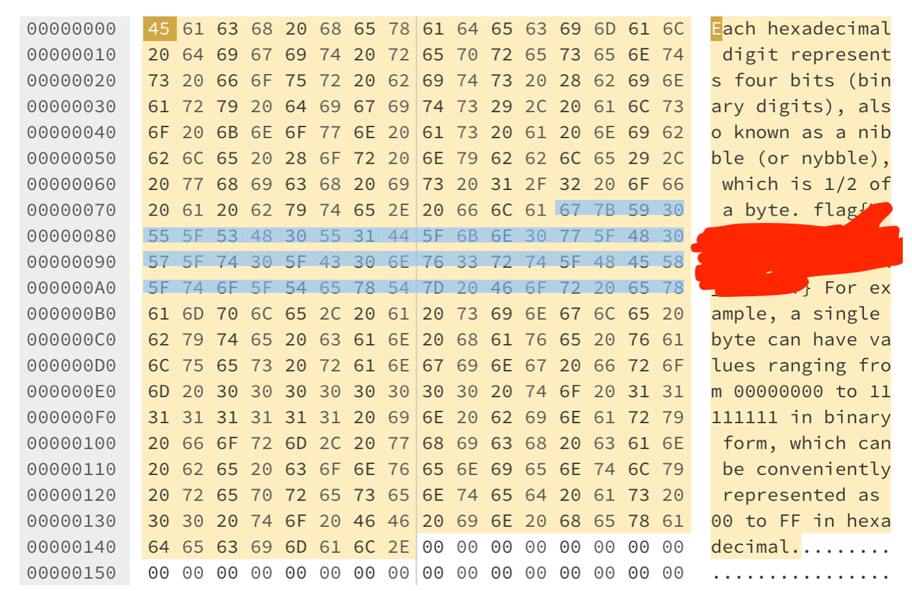
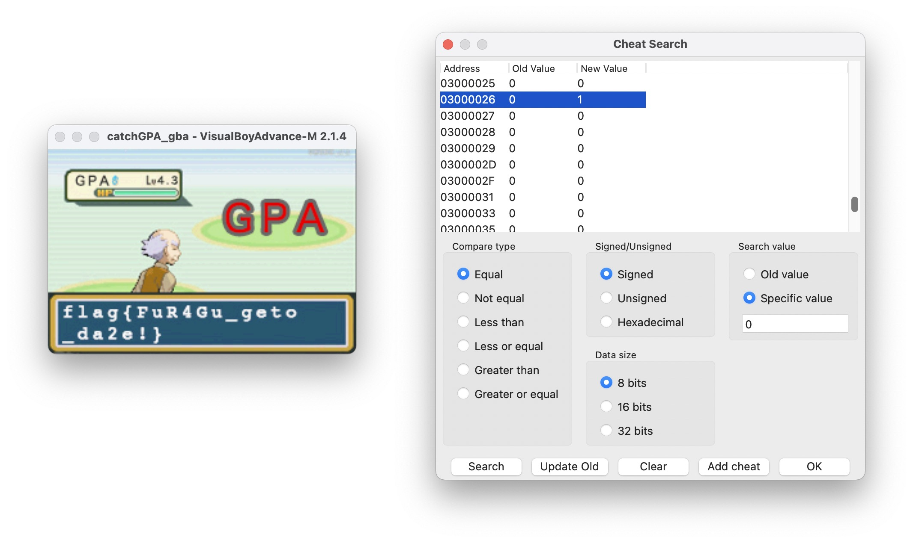
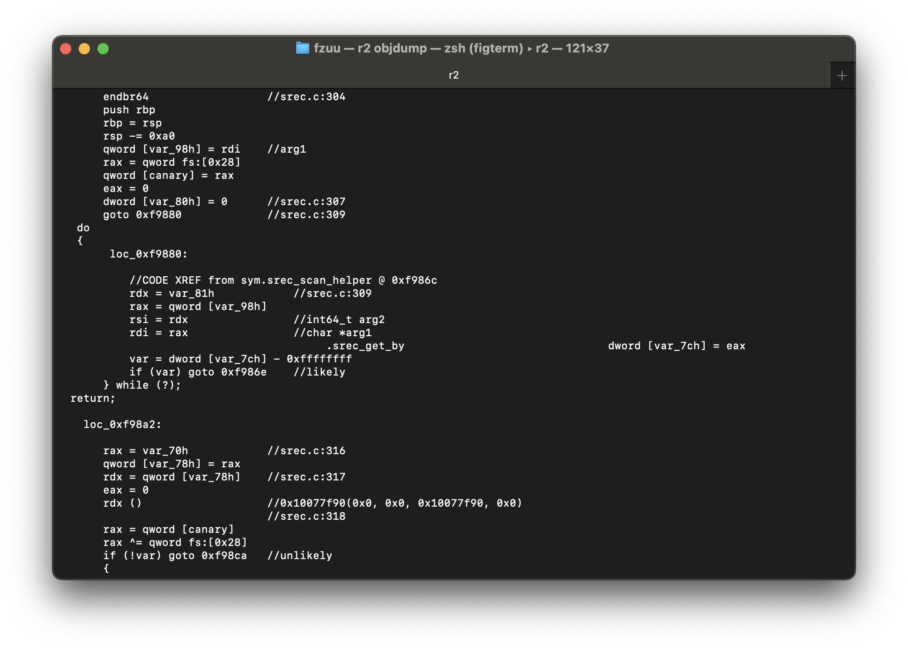

Hackergame 2021
a brief writeup
签到
观察可以发现http://202.38.93.111:10000/?page=1后面的参数page决定了现在的秒数，找个日期计算器即可
进制十六——参上

复制下来找个Hex编辑器就可以了
猫咪问答 Pro Max
看起来主要是考察信息检索
- 第一题使用 https://web.archive.org 即可
- 第二题可以爆猜（不是），找到对应的网页即可（其实这题是很晚才做的，当时直接搜了一下在知乎找到了…）
- 第三题在 https://lug.ustc.edu.cn/wiki/ 直接搜索“活动室”就能找到了
- 第四题找出论文，数一下有几张图
- 第五题找到对应的文档，command+F report就能找到是
/dev/null（为什么呢）
卖瓜
考虑 ，并且要求解全部都是正整数的情况下，是不可能的，那么极有可能是通过整数溢出来达到最终结果，考虑6是0110，那么通过连续移位和相加就能组合出0xFFFFFFFFFFFFFFF0，也就是-16，正好与结果相差36，是9的整数倍，把移位需要的系数计算出来submit即可
1 | arr=[2305843009213693952,576460752303423488,144115188075855872,36028797018963968,9007199254740992,2251799813685248,562949953421312,140737488355328,35184372088832,8796093022208,2199023255552,549755813888,137438953472,34359738368,8589934592,2147483648,536870912,134217728,33554432,8388608,2097152,524288,131072,32768,8192,2048,512,128,32,8] |
透明的文件
看到这些[等符号就能想到这应该是ANSI转义序列，只要把\e添加在每个[前，打印出来就可以看到flag（为什么题目说劣质终端呢？可能是因为某些，比如cmd.exe里没法处理ANSI转移序列吧）
旅行照片
突破口在于图上的蓝色KFC，太显眼了，直接搜索蓝色KFC就可以找到，电话，地址都一并得到了，居然还是一个网红打卡地（）可以发现拍照位置在秦皇岛，通过影子猜测时间，然后通过街景确认左边的建筑物上的文字，楼层当时考虑到可能拍照的角度不同直接数会有点误差，就直接在控制台写脚本爆破了（其实就是懒得数）这个故事告诉我们不要乱发照片（）
FLAG 助力大红包
简单解法：发送到各大群聊砍一刀（不是）
通过助力信息可以发现，目标会检测前后端地址是否匹配，搜索一下后端检测地址的方法可以发现X-Forwarded-For这个关键点，而前端地址就在request data里，这样就可以写出脚本了（一开始没有看到/8都会被认为是同一个就直接random了，到最后几个一直报地址相同）
1 | import requests |
Amnesia
轻度失忆
这一个小问题比较简单，去掉.data段很明显还能通过立即数把参数传进去，直接putchar每个字符即可。
记忆清除
使用一些静态分析工具就能发现，一个ELF文件含有代码的地方不止有.text，还有.init，.fini等等地方，假如我们能把代码插入这些位置的话我们就能在没有.text的情况下执行代码了
将代码插入特定的section是简单的，通过__attribute__ ((section (".init")))就可以实现，接下来就是如何执行，看看libc源码
1 | static void __libc_init_array() { |
可以发现__preinit_array_start中的函数指针会在初始化的时候被调用，那么接下来就是将我们的函数指针放进去
1 | __attribute__((section(".preinit_array"), used)) static typeof(print) *preinit_p = (char *)print; |
然后就是写个汇编
1 | global _start |
编译一下，然后dump出Hex
1 | objdump -d ./print | grep '[0-9a-f]:' | grep -v 'file'|cut -f2 -d:|cut -f1-6 -d' '|tr -s ' '|tr '\t' ' '|sed 's/ $//g'|sed 's/ /\\x/g'|paste -d '' -s | sed 's/^/"/'|sed 's/$/"/g' |
完整代码
1 | __attribute__ ((section (".init"))) char print[] = "\x31\xc0\xb0\x04\x31\xdb\xb3\x01\x31\xd2\x52\x6a\x21\x68\x6f\x72\x6c\x64\x68\x6f\x2c\x20\x77\x68\x48\x65\x6c\x6c\x89\xe1\xb2\x0d\xcd\x80\x31\xc0\xb0\x01\x31\xdb\xcd\x80"; |
图之上的信息
（开始的时候懒得看文档的，毕竟#摆烂）查看文档可以发现GraphQL的Introspection操作
1 | query = `{ |
查看返回结果
1 | { |
这下就很清晰了，我们要查询邮箱，只需要查询user的privateEmail，然后照着文档写，猜测admin就是id为1的用户
1 | query = `{ |
即可得到flag
Easy RSA
我们需要解出p, q
1 | def get_p(): |
注意到x是一个质数，根据Willson定理有 ，也即是
只要求出的逆元即可
然后是q
1 | value = [getPrime(256)] |
根据已有信息可以倒退得到，求解方程
即可，注意到这个是很多个质数的乘积，那么它的欧拉函数值
并且有如下条件成立
那么结果是好求的，只要用扩展欧几里得求到，使得
然后就可以得到
接下来就靠着Copilot一顿写就好了！
赛博厨房
这个前两个问题只要看懂题目在说什么，问题不大
灯，等灯等灯
Level1
是一个很大的同余方程组（然而当时看着题目好复杂的样子就直接开摆了）其实并不困难，现在想起来丢给数学工具大概就完事了罢！这里用z3求解器来解
1 | import numpy as np |
解完之后只要一个一个用手点就好了
只读文件系统
这个问题一开始想直接绕过chroot，最后以失败告终了，然后就到了看题解“Ohhh”的阶段了
卷王与野生的 GPA
这个很好玩，直接把ELF拖进IDA发现，有一个decrypt函数在解密flag，其后面跟着的代码和showtext的十分接近（猜测是用来刷新的？），那么只要找一个位置调用一下即可，个人选择的是先patch init里的给球赋值
1 | .text:080004E0 init ; CODE XREF: main:loc_80005DE↓p |
然后修改一下trickplay
1 | .text:0800049C EXPORT trickplay |
至于为什么不直接decrypt，因为这样子可以抛一次球（）

助记词
第一顿大餐
注意到延时在equal()中，我们想办法去让这个函数被调用就可以了。数据被储存在HashMap里，假如我们让每一个数据的hash相等，这个时候就需要去判断对应index的数据是否相等，就会调用equal()触发延时，一次发送32条数据，足够完成第一个问题了
minecRaft
实际上是个逆向题，做的时候直接就去分析js了（（（）））花点时间慢慢分析就好了，以下是一些简单的反混淆
1 | // 这个函数执行输入的处理，将输入字符串切分，四个一组，两两用 code() 进行运算 |
不难发现，我们只要将code()里的计算给反过来就可以完成了解密了
1 |
|
以上内容直接复制到console里面就能看到答案
fzuu
属于看到题目长度就开始摆烂啥都没做最后发现其实很简单的一个了，首先按照提示用AFL fuzz objdump，大概五六分钟就可以得到一个crash
1 | ┌──(kali㉿k)-[~/Desktop/fzuu] |
连上调试器
1 | gdb-peda$ set args -d out/crashes/id:000001,sig:04,src:000375,op:flip1,pos:2 |
注意到RIP，可以发现，它大概是直接执行了这个文件的ff ff 33 33 33 33 33 33 33处的内容，直接找一个shellcode复制进去试试(http://shell-storm.org/shellcode/files/shellcode-806.php)
1 | ┌──(kali㉿k)-[~/Desktop/fzuu] |
然后就，结束了，就很简单，既然都到这里了，那我们不妨简单看一下为什么会出现这样的问题，直接定位到srec_scan_helper看看先

很明显，从文件中读入数据，然后一个rdx()直接执行了
1 | .text:00000000000FA329 loc_FA329: ; CODE XREF: srec_scan+96D↑j |
然而在前面的case中，bytes从1减到0又-2了
1 | case '1': |
，这里正好满足条件
外星人的音游掌机
根据提示，去装上icebox等等相关工具，开始分析
超 OI 的 Writeup 模拟器
果然还是逆向比较简单，这次没人两小时手做了吧
第一问可以手动还原，不难发现，用来计算结果的循环其循环次数只和输入的前两个参数有关，并且前两个参数都是常量，那么我们就能从结果为0一步一步往上倒推得到答案
当然也可以直接符号执行
1 | import angr |
以上脚本对于前两个问题都可以比较快求出解，摆烂摆出前两题。到第三问跑了一会实在不行了，选择放弃！
结束之后发现好像要写比较多代码的题目都懒得做了直接跳过了（）